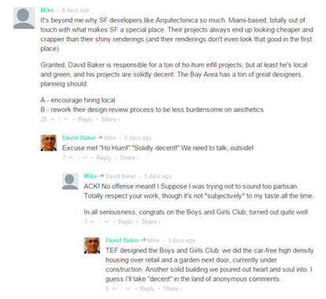

"The World, we are told, is in the midst of a revolution.
The new tools of social media have reinvented social activism. With Facebook and Twitter and the like, the traditional relationship between political authority and popular will has been upended, making it easier for the powerless to collaborate, coordinate, and give voice to their concerns," Malcolm Gladwell cheekily writes in a piece for the New Yorker. Popular culture certainly reinforces this narrative. We see it in the language the tech community has appropriated for its discussions (e.g., "revolutionary"; "disruptive"). And we see it in the headlines for more traditional media, as the BBC declared that, as of May 2012, the social media revolution had officially begun. Mr. Gladwell, however, disagrees. He brings up several counterpoints: the lighting speed through with civil rights sit-ins spread throughout the American South in February of 1960 despite the lack of internet, email, and cellphones. The lack of critical examination by traditional media of the "Twitter revolutions" in Iran and Moldova misrepresenting the fact that most of those tweets were coming from the West, not from within the countries. (Why would the Iranian youth be tweeting in English and not Farsi?) He ends with quite an opposite conclusion: social media is not revolutionary, it merely enforces the status quo.
If the jury is still out on social media's larger societal impacts, surely the question as to its effects on architectural discourse has not been resolved. In order to examine the possible effects and the different voices answering this question, we can look to the city at the crux of social activism and the digital frontier: San Francisco.
San Francisco is not a city shy in sharing its opinions.
Residents dodge political rallies, religious proselytizers, and the expectation of citizen activism due to the city's history. It is therefore unsurprising that the city--and its residents--are no less vocal about the architecture that constitutes it. A dynasty of sharp-tongued architecture critics at the San Francisco Chronicle have, for decades, been pushing architectural conversations into the public realm. That, per city policy, any proposed building project can be subjected to a city-wide referendum has furthered the notion that "architecture" belongs to the people.
Simultaneously, however, San Francisco is facing an existential crisis as Silicon Valley permeates the peninsula and creeps into the city. The city has been at the forefront of the adopting technological trends as well as dealing with the conflicts that arise from them, such as the "sharing economy". If a consensus will be reached as to social media’s effects on the field of architecture, that consensus will likely be reached there. Luckily, San Francisco's booming real estate market gives us no shortage of fodder to discuss.
So, will the internet affect architectural discourse?
"<- Yes" or "No->"
Click arrows to the sides to see each argument! Continue reading the arguments by scrolling down from any page.
NO!
If a tree tweets in a forest...
Twitter, YouTube, and Blogs have broken the floodgates; a sea of self-appointed architectural critics have proliferated in the digital age. The question at hand is not whether these amateur theorists exist (that part is undeniable), but whether or not they will have an impact in architectural discourse. The latter part is much less certain. For as much as the field of architecture can be subjected to external pressure, when it comes to influencing opinions, who you are matters not just what you are saying.
Although the internet and social media are novel innovations, their essential service is not new: they are a vehicle for sharing opinions. Though communication has gone through many evolutions (from developing spoken language, to writing, to the printing press, to radio, to television, and finally, to the internet), architecture has been dealing with opinions since its inception. Admittedly, it is easier for the average person to express their thoughts now than ever before, but that doesn’t mean architects are any more likely to listen. After all, Brett Steele in an interview in Log 28 proclaims that the point of architectural education in the 21st century is to create audiences for architecture. Embedded in that statement is the following subtext: if you did not go through the architectural education process, you are not the intended audience for architecture. Before the general public proclaims its outrage over its exclusion from the conversation, it must remember it is in good company: that even Buckminster Fuller and Simon Rodia (Watts Towers) struggled with acceptance into the field.
YES!
Social Media Will Revolutionize Architecture
"Eisenman: In the '90s people thought there was a digital revolution. There wasn't.
Kipnis: But there has been since.
Eisenman: What's happened since that makes you say that?
Kipnis: Access and ease of use. Basically, You Tube,Facebook, Twitter."
The role of architecture, and architects, in society has always been a fluid one. Peter Eisenman's and Jeffery Kipnis' discussion in Log 28 serves not only to highlight this ever-changing relationship, but also proposes that the real change of the digital revolution will arise from new tools for communication, not new tools for design. In the same issue of Log, Brett Steele discusses the major challenge facing architecture schools in the 21st century. He suggests that architectural education must shift from a service model of training architects, to an arena for events and discussions that constantly challenge the field. In other words, the architectural education should create an audience for architecture. When these two conversations are taken together, a critical, digital question arises: If the internet allows these critical dialogues to expand beyond the walls of an architecture school, are audiences for architecture being created out of the general public? While trained or licensed architects may not agree, these digital audiences are tweeting loud and clear: "yes!"
No, Continued
This sense of exclusion also hints at a sense of cohesion that in all honesty probably misrepresents the current state of the field. A more accurate pictures emerges from Peggy Deamer’s “The Critical Problem,
Or, Talking Shop” in Log 30.
The "In Pursuit of Architecture" conference organized by Log at the Museum of Modern Art in New York last September was an amazing display of critical crisis. While Sylvia Lavin decried that there was no crisis for the theorist to discuss, the wretchedness she acknowledged, and which was so palpably felt by the audience for both the critics and the architects (and Log editor Cynthia Davidson), indicated that a crisis in fact exists…
The gauntlet was laid down by Freek Persyn when he said, in response to Whiting's question of whether any of the architects even read Log (suggesting that they did not), that he had once immersed himself in theory but now was more interested in pleasing his client. Wow! On the one hand: "Take that theorists! You are now irrelevant!" On the other: "Deal with this, because this is what an intelligent architect is thinking about." And deal with it the theorists could not. This, of course, is not surprising. Architecture theory since the mid-20th century has upheld its opposition to practice, implied that serving the client precludes ideas, suggested that architecture is not a service industry, and argued for the distinction between building and Architecture.
Case Study: Warrior's Arena
Snohetta's first design for the new Golden State Warriors basketball arena was quickly flushed away from the fans after social media quickly spread word of the arena's resemblance to a giant toilet. "What toiltet?!?" exclaimed the team's publicity specialists after quickly releasing a revised design. Though fans were taken aback by the quick turnaround, it seems the new design is made much more popular by the removal of the bayfront terrance / upper deck.
Case Study: One Van Ness
After enduring a five-year design and environmental review process, Richard Meier suddenly lost his commission for the One Van Ness Tower after the property was sold to a new developer. Snohetta landed the new commission, extending their high-profile hot streak in San Francisco. The firm sought to make a big statement in this rapidly changing neighborhood, and capitalized upon the strange wind loads by emphasizing the "notching" in the tower that solved the structural issues. The twitterverse, however, quickly engrained an "unseeable" image into everyone's minds after the first renderings were released to the public. The simple caricature turned the celebrated wind-load notch into the building's mouth, and turned the building into a mouthpieth for gentrification and displacement issues. Tenderloin, or Twitterloin??
The architecture firm and/or client seems to have caught on to this public image and recently released "more developed" designs, suggesting the aforecaricatured image was only a preliminary design meant to undergo future revisions. Snohetta's change: plausible explination or attempt at saving face?
Yes, Continued
Architects will not have to acknowledge the legitimacy (or lack thereof) of these self-proclaimed architecturaphiles for them to have an impact. Particularly in an era where architecture is struggling with the lack of a universal guiding theory since the era of the critical project, these "uneducated" audiences have more ammunition that ever to affect architectural conversations. Case-in-point: San Francisco.
From SFCurbed's RFP for caricatures of Market Street's newest tower, to a satirical twitter account for the Nema luxury condo building (rentENEMA), examples of architectural critics by the general public are abound. Snohetta's recent gold-rush of big-named San Francisco project has particularly proven to be a double-edged sword. Another SFCurbed article entitled "New Designs for Warriors Arena Would Like You to Forget That Whole Toilet Debacle" chronicles the project's redesign after the general public lambasted the original design as a giant toilet seat. Indeed, the twitterverse can be an unforgiving place.
But whether these critiques are justified or not, their impact cannot be ignored. While academic architects do not have to legitimize these comments in their theoretical discourses, practicing architects suffer from a debilitating condition: responding to clients, whose social media accounts get bombarded by these commentaries. Oft cited anecdotal evidence suggests that audiences despising new projects is nothing new. From the Eifel Tower, to the Chrysler Building, many of today's most beloved buildings suffered from horrific public approval ratings at their debut. While this shortsightedness persists amongst the general public, the public's ability to see post-construction renderings and audibly complain has been so greatly magnified that changes become inevitable. Example after example proves that after a negative public reaction to a design project, a press conference or publicity release quickly claims that these "preliminary" images were merely the first design iteration. They are often accompanied by a revised design.
No, Continued
In summary, the relationship between practicing architects and theorists and critics is often strained. If different aspects within the field can often dismiss each other’s opinions as illegitimate, one may assume that the opinion of those outside the field may be altogether irrelevant. But how can this be with the notion of social media as the great equalizer? The democratization of information?! Sadly, examples within the architectural realm tend to support Malcom Gladwell’s bleak view of the internet as a reinforcement of the existing inequalities of the status quo. This pessimism is highlighted by the recent controversy over the exclusion of Denise Scott Brown in the 1991 Pritzker Prize awarded to her husband and design partner, Robert Venturi. A Change.Org petition and Facebook campaign have gathered the support of nearly 20,000 people, notably including Ms. Scott Brown herself, as well as six Pritzker Prize winners (Mr. Venturi is also amongst the signatories). Despite this groundswell of support from the general public, architecture students, and practicing architects, the committee has decided that it is beyond their power to revisit the awards of previous committees. The exclusion of women from this award (only two have ever won) is seen to contribute to ongoing gender discrimination in the field, highlighted by the 32% Project. This organization seeks to address the imbalance that occurs sometime after the educational process when the percentage of women in the field drops from over 50% into the twenties.
It will once it stops being treated like a new technology - Alexandra Lange
In her opinion piece for dezeen magazine, Alexandra Lange suggests something quite different altogether: social media does not represent a shift in how architectural communication ought to function, but it's being treated like it does. She holds to a simple argument, noting that across social media platforms, architects tend to be very self-centered. They post about their own ideas, projects, selfies, awards, and speeches. This, however, is not a reflection of how designers actually spend their days. The main problem with how architects are using social media, Lange suggests, is that they are trying to do something different with it than with traditional communication technologies. In other words, social media should be more representative of architects lives.
Lange notes, "A more flexible, critical and conversational use of social media could suggest interpretations before the concrete is dry. As an example, consider Philip Johnson, perhaps the most networked architect of his day. Philip Johnson would have been really good at social media. He understood, better than most, that interest is created by association. That was the principle of his salons, drawing the latest and greatest from a variety of cultural realms. Those young artists and architects helped him stay young and current, he helped them by offering literal or metaphorical institutional support."
She runs through the gamut of social media platforms and identifies analogous forms of traditional media that could help architects maximize this digital value. Instagram? Stop posting selfies and start documenting your interactions with buildings [preferably including some by other architects]. It's a chance to create informal photographic exhibits, curated from more banal and humanizing perspectives. Tumblr? It's a living archive. Whether its graduate students documenting their research, architects narrating the construction process of their buildings, or historians drawing attention to historical moments (see tumblr page: FuckYeahBrutalism), these are chances to create interactive documentation to drive future conversations. Twitter? A place for both witty banter and deeper examination via digital conversations. No longer limited by location or time, specific events can be thoroughly examined [and often over-examined] almost instantly by these conversations.
Her advice to architects is to stop outsourcing social media to communications departments and discussion to architectural critics. Use the conventions we've already mastered (exhibiting, archiving, conversing) and actively participate in the world of social media, lest the conversation continue without participation by architects.
No, Continued
While this represents a notable failure on behalf of social media to affect change, some people may interpret the architectural conversation in San Francisco to be on a different trajectory. Recently, many projects have released renderings into the blogosphere only to be lambasted by anonymous internet commenters. Many of the projects were quickly revised, causing some to jump the gun and proclaim the indubious effect of social media on architectural discourse. This, however, is too literal a reading. It has become more and more common for architects working on highly publicized projects (e.g., basketball arenas) to release architectural snippets before the design process is actually complete. Is this truly a case of architects reaching out to the general public for input, or is it merely a distraction tactic, allowing the design process to move forward without constant public inquiries as to the state of the project? These recent examples may be too contemporary to truly examine, but another San Francisco project has withstood the test of time and--remaining despised for over 40 years—better reflects the public opinion processes.
The project is United Nations Plaza in San Francisco's Tenderloin. Although technically within the realm of landscape architecture, this project provides an important case study as it has been under intense criticism for its design since its inception in the 1970s. A podcast about the plaza recalls its immediate derision as "awful, flamboyant, and an example of a designer's egotism getting passed onto the people as a piece of art" due to its untraditional fountain design. Others chided its emphasis on design despite its large homeless and drug-addicted population in the area, which quickly earned it the nickname Urination Plaza. This shows that San Franciscan's obsession with policing their built environment is not a new trend. An even stronger argument, however, is presented by the designer Lawrence Halprin, himself. Despite living into the age of social media (d. 2009), and hearing accounts of his design's unpopularity, both before and after twitter existed, Halprin remains faithful to his original vision:
Yes, Concluded
Perhaps most telling of all, is that architects themselves are increasing being pulled into the fray. Local architect David Baker was recently caught off guard when he erroneously became the topic of conversation in a comment section for a project by a different designer. After jumping in to his own defense, Mr. Baker quickly realized the naiveté of the anonymous commenter, "Mike". Mike was actually criticizing a builder next to the one Mr. Baker designed. This example further proves that the audience need not properly "educated" to have an impact. Far from an isolated example, the AIA has been prompted to issue a guide for "Social Media and Architects." In it, internet veteran Jody Brown of the popular www.coffeewithanarchitect.com, discusses the digitally focused world we currently live in. Despite the sarcasm and self-deprecation that often pepper his blog, Mr. Brown highlights the potential opportunities for increased communication and impact offered by social media.
Bjarke Ingles seems to have taken note. A Danish architect and principal of BIG, Ingles has made a name for himself not only through his bold design, but through his TedTalks. In them, he engages the architects and the general public equally, using the stage to debut his catchy slogan "Yes, is more". Ingles may embody the essence of the digital revolution envisioned by Kipnis. While it may take designers some time to recalibrate the equilibrium and their authority in internet-based discourse, Ingles and Brown show that those who take advantage of these new platforms can make quite a name for themselves.
Only if it helps build a unified theory - Patrick Schumacher vs. Only if it helps create enemies - Eric Owen Moss
Log 21 featured a fascinating discussion between Patrick Schumacher and Eric Owen Moss about the role of an overarching theoretical framework in contemporary architecture. Schumacher proposed parametricisim as the source of this framework, and extols the benefits that finding a guiding theory for the 21st century could have. Moss responds with some preoccupations of his, namely that an overarching theory could stifle ideas and innovations that do not follow the new rubric. Parametricism aside, a somewhat liberal reading of these two texts allows a possible interpretation of what role social media could play in the future.In this subtextual discussion, Schumacher and Moss hint at different, but complementary roles social media could play in the following two quotes:
"With a unified theory one is better prepared to manage the different designs, designers, and approaches that run in different directions, fight each other, contradict each other, and stand in each other's way. I am also teaching at a number of schools, the Architectural Association Design Research Laboratory [AA DRL] being one of them, an expanding group that is now 150 to 160 students. Here again there is an issue in trying to converge efforts so that people don't trip over each other and get in each other's way. The need for a unified theory is first of all to eliminate contradictions within one's own efforts - so one doesn't stand in one's own way all the time. If you go around from jury to jury, from project to project, you say one thing here, another thing there, and further ideas come to mind; by the third occasion you might be saying and doing things that don't gel, don't cohere" -Schumacher
"I applaud the power of your effort to demand a new order. That gives me something to attack, and architecture needs enemies, within and without. Contemporary architecture has too many friends" - Moss
Interpolating Schumacher's quote, one could find support for social media influencing architectural discourse if it can help create a consistency across these "jury-to-jury conversations" all over the globe. Something like a live tweeting of a jury review could document the conversation and allow comparison to ones at a different school. These documented conversations could compound into a body of work large enough to establish a consistent framework for discussing architectural ideas. It could also continue to evolve, as subsequent generations come of age and begin tweeting their new conversations.
A liberal reading of Moss' quote, on the other hand, suggests a possibility of social media being used as a tool in defining the relationship between architecture's friends, and its enemies. How successful the tools become would be directly tied to how strongly they can generate and maintain these narratives of friends and enemies. The coalescence of the field into these defined camps would allow discourse to flourish rather than be stifled by one dominating theory. Schumacher and his "followers" would be free to profess the power of parametricism, while Moss and his facebook friends could continue to explore ideas of the unknown through Gnostic Architecture.
What do you think? Contribute to the comments section of this website!
It is too overwhelming to have an effect - Guggenheim Helsinki Competition
The digital age reached a new threshold last year with the Guggenheim Helsinki Competition. Officially taking the title of the world's most popular architectural competition, the organizers must now sift through 1,715 anonymous entries in order to find a winning design. While many praised the transparency of this democratic competition format--where prestigious names and tiny firms are equally shielded by anonymity--the competition also received a striking amount of criticism for the architectural future it represents.
In an opinion piece entitled "Transparency In Architecture Competitions Is A Bad Thing", architect Federico Reyneri takes a critical stance against the competition. Whereas traditional publications necessitate the careful selection of projects, the digital age has pushed the boundaries of the infinite, allowing every project to be published regardless of merit, Reyneri states. Quoting Frank Gehry's famous quip that "98% of everything that is built and designed today is pure shit", Reyneri asserts this notion holds true to the Helsinki competition as well. The problem? "I know that it is easier to sneer at funny projects than to debate on fair proposals, but the effect is that until the winner is announced, absurd proposals will be more visible than the finalists, and it's pretty awkward."
In other words, the digital age represents the breakdown in self-curation that has defined architectural discourse over the course of the twentieth century. Foregoing the design corollary to peer-review, the erosion of quality control will dilute the reputation of the field. With prominent architects and theorists sharing the stage with millions of less-vetted professionals, amateurs, and enthusiasts, the credibility of the discourse--and therefore its effects and impacts--will slowly disappear.
No, Concluded
I'm not sure, even now, if I were going to be asked to design this how much I would change. I mean why would I change it, you're talking about my life's work for Christ's sake. I was the first person to design a plaza, a fountain, so that people could use it. People should not be told they cannot use a fountain, get inside of it, and use it. All places should be usable by people in the city. Now having said that...why would I design something to prevent homelessness? I mean, homelessness is a social problem that cannot be designed for in the sense of aesthetics and culture. Of course they [places] should be friendly. The real question is: what do you mean by friendly? No one has ever said to me you should design an unfriendly place. But you know it depends on who you talked to, when you say you've talked to people who say that sort of thing. Who are they? Sounds like a pretty stupid thing to say actually. I would challenge it. I can't imagine somebody would say something stupid like that.
Halprin, undeterred by naysayers to his vision of good design for all people, went on to build many successful projects and is considered to be an influential contributor to the field of landscape architecture. He provides a glimmer of hope for young architects whose projects get attacked by the trolls of the internet. However, this is a conversation about a particular project. If design theories, already subject to the ebbs and flows of the prevailing fashions of time, are instead the product of the internet conversations can their demise be hastened? This would not be the first era in which architectural theory is impacted by a technology, and if public commentary indeed hastens the demise of theoretical ideas, it certainly won't be the last.
It doesn't matter; our computer overlords will soon enslave us - Jaron Lanier
A pioneer in the digital world, Jaron Lanier made his name as the founding father of virtual reality. After decades at the cutting edge of Silicon Valley technology, Lanier stunned the industry in his two most recent books, "You Are Not a Gadget" and "Who Owns the Future?". In these works, he criticizes the social-media centered digital turning point of the mid-2000s and began drawing attention to some very problematic developments. Particularly relevant to architects, he criticizes the mob-rule mentality of the open-source digital strategy where innovation and creativity are stifled. Combined with the advent of web-scraping and the anonymity of the virtual data, creative professionals are seeing their value disappear. In this interview with Stephen Colbert, Lanier discusses one of the central examples to his argument: the devaluation of translators. Extrapolating this reality perhaps several decades into the future, it is so farfetched to think of a digital algorithm that scrapes the web for novel design approaches and automatically combines them into computer-generated architecture? While this may perhaps lie far into the future, it's easier to imagine an interim where digital anonymity and ease of sharing weakens the credit that an architect will receive for his/her work. And if architects are divorced from their projects in the public's eye, the importance of the field's internal discourse will too fade.
Click on the black box below to watch an interview with Jaron Lanier
Guides to Social Media
Want to see how architects are currently using social media? Check out these three guides: AIA's Social Media Guide
If slaughtering Nepali migrant workers won't take me down, neither will Twitter - Zaha Hadid
Building upon the failure of the social-media driven movement to award Denise Scott Brown the Pristzker Prize for her work alongside--and not subordinate to--Robert Venturi, social media activists were dealt another blow by the general lack of action surrounding all aspects of the 2022 Qatari World Cup. Making the blog headlines in February of last year was a quote by Zaha Hadid where she responsibility for the estimated deaths of up to 6,000 migrant workers in the construction of her stadium. The blogosphere was outraged by her reaction, but little action has resulted over any of the numerous human rights violations associated with Qatar's World Cup bid. While Zaha may continued to be offered prestigious commissions, what duty will architects have in responding to the vicious comments that can permeate the web? San Francisco architect David Baker recently found himself the topic of conversation on this articles comment section, and couldn't resist jumping into the discussion:

So, will architectural discourse be affected by social media?
Contribute to the comment section below, and share your opinion!